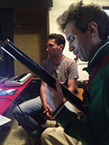

INFO: FUNCIÓN | INTEGRANTES | TARIFAS | DISTRIBUCIÓN
| RIDER |
I N I C I O
AÑOS: 2005 - 09 | 2010 | 2011 | 2012 | 2013 | 2014 | 2015 | 2016 | 2017 | 2019 | 2020 |
 C O N C I E R T O
S & A C T I V I D A D E
S
C O N C I E R T O
S & A C T I V I D A D E
S
2 0 1 8 (13)
I N I C I O
AÑOS: 2005 - 09 | 2010 | 2011 | 2012 | 2013 | 2014 | 2015 | 2016 | 2017 | 2019 | 2020 |
2 0 1 8 (13)
Enero
Febrero
Marzo
Abril
Mayo
Junio
Julio
Agosto
Septiembre
Octubre
Noviembre
Diciembre
Miércoles, 10-01-2018, 5 pm (Emilio)
Concierto en el velorio de mi Tía Mayayo Guardia, Funeraria Vallés, Caracas.

Sábado, 20-01-2018, 11 pm (Cuarteto: Marcy, Lizardo, Pedro, Emilio)
Concierto en la Peña Musical, Casa de los Peña, El Sitio, San Antonio de los Altos.
Febrero


Sábado, 24-02-2018, 10 pm (Dúo: Pedro, Emilio y dos invitados en la maracas y en las congas)
Concierto en la Peña Musical, Casa de Flor, Urb. La Suiza, San Antonio de los Altos.
Todo el mes de febrero, 2018 (Jesús Enrique Torres (ingeniero), Lizardo, Emilio)
Grabación de las maracas y otros idiófonos en Estudios Edén, Los Picachos, San Antonio de los Altos.

Marzo
Todo el mes de marzo, 2018 (Jesús Enrique Torres (ingeniero), Lizardo, Emilio)
Grabación de las maracas y otros idiófonos en Estudios Edén, Los Picachos, San Antonio de los Altos.
Sábado y Domingo 17,18-03-2018
Presentación de la coreografía de Carlos Orta El Último Canto, por el Ballet Coreoarte, con música de Emilio Mendoza.
"35 Años en Movimiento y Andares", Sala Ana Julia Rojas, UNEARTE, Caracas.

Abril

Todo el mes de abril, 2018 (Jesús Enrique Torres (ingeniero), Manuel, Emilio)
Grabación del bajo en Estudios Edén, Los Picachos, San Antonio de los Altos.
Mayo
Todo el mes de mayo, 2018 (Jesús Enrique Torres (ingeniero), Manuel, Emilio)
Grabación del bajo y del sitar en Estudios Edén, Los Picachos, San Antonio de los Altos.

Junio

Todo el mes de junio, 2018 (Jesús Enrique Torres (ingeniero), Emilio)
Grabación de armónicos vocales, edición y mezcla en Estudios Edén, Los Picachos, San Antonio de los Altos.

Julio
Domingo, 15-07-2018 (Emilio). Muestra del video "Una Visión de mi Entorno II", de Mardonio Díaz con Evolución del CD NATURA, muestra de los dos videos de Ozono Jazz por Wladimir Rancho Pérez, Encanto y Canción de Cuna.
Cierre de la exposición colectiva "Entre Montañas", Sala Pedro León Zapata, Complejo Cultural, San Antonio de los Altos.


Sábado, 28-07-2018, 4 pm (Cuarteto: Pedro, Churro, Lizardo, Emilio)
Concierto en el evento "Tres Miradas a Caracas - reFLORESTAndo", de la asociación Caracas City 450, Ave. Juan Pernalete, Altamira Sur, Caracas.
Todo el mes de julio, 2018 (Jesús Enrique Torres (ingeniero), Emilio)
Edición del CD en Estudios Edén, Los Picachos, San Antonio de los Altos.


Agosto
Todo el mes de agosto, 2018 (Jesús Enrique Torres (ingeniero), Emilio)
Edición del CD en Estudios Edén, Los Picachos, San Antonio de los Altos.
Septiembre
Todo el mes de septiembre, 2018 (Jesús Enrique Torres (ingeniero), Emilio)
Edición del CD en Estudios Edén, Los Picachos, San Antonio de los Altos.
Octubre
Lunes, 11-10-2018, 9:00 am (Emilio)
Se entregó la Carta de Solicitud y los "Considerandos" en la Comisión de Ambiente, Asamblea Nacional, para lograr la enmienda de la Constitución Nacional para resguardar el Sonido de la Tierra.
Todo el mes de octubre, 2018 (Jesús Enrique Torres (ingeniero), Emilio)
Edición del CD en Estudios Edén, Los Picachos, San Antonio de los Altos.

{kind=link}
Noviembre
Todo el mes de noviembre, 2018 (Jesús Enrique Torres (ingeniero), Emilio)
Edición del CD en Estudios Edén, Los Picachos, San Antonio de los Altos.
Diciembre
Todo el mes de diciembre, 2018 (Jesús Enrique Torres (ingeniero), Emilio)
Edición del CD en Estudios Edén, Los Picachos, San Antonio de los Altos.
Sábado, 27-12-2018, 6:00 pm (María Rivas, Miguel Chacón (ingeniero), Emilio)
Grabación de María Rivas, voz, para Guarapiche Blues, Laboratorio de Música Toronjil, Miguel Chacón ingeniero, San Antonio de los Altos.